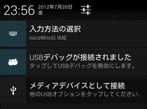
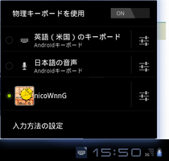

インストール後、以下の手順で設定を行うと、nicoWnnGで入力できるようになります。
| Android 4.x |

文字入力が可能な状態で、画面上端の「通知バー」を下へスライドして、「入力方法の一覧」で「nicoWnnG IME」を選びます。
|
|||
|---|---|---|---|---|
| Android 3.x |

文字入力が可能な状態で、デスクトップ画面右下（時計の隣）のキーボードアイコンをタッチして、「nicoWnnG」を選びます。
|
|||
| Android 2.x/1.x |
入力エリア内を長押しして、表示されたダイアログから「入力方法」を選びます。
IMEの一覧が表示されますので、「nicoWnnG IME」を選択してください。
|
| タイプ | スマートフォン タブレット |
|---|---|
| 横画面 縦画面 |
12キー（トグル） 12キー（フリック） 12キー（２タッチ） ローマ字（default） ローマ字（コンパクト） ローマ字（ミニ） ローマ字（ミニ横） JISかな 五十音かな ローマ字（旧） JISかな（旧） 五十音かな（旧） |
| サイズ | 最小～最大+3 |